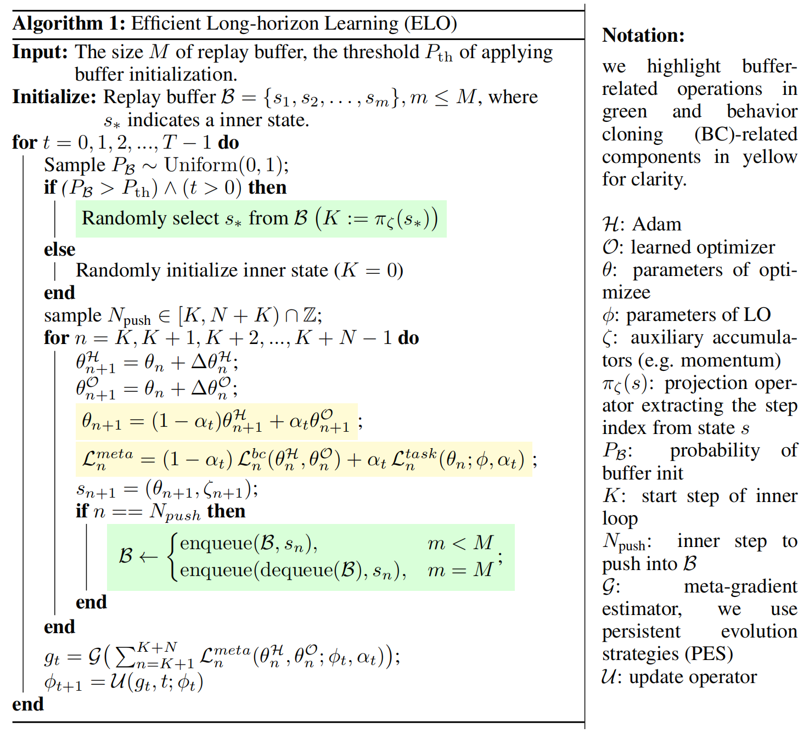
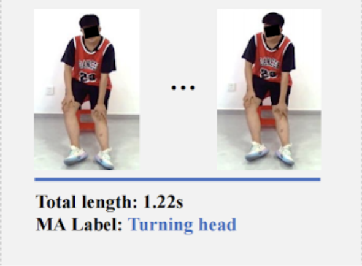
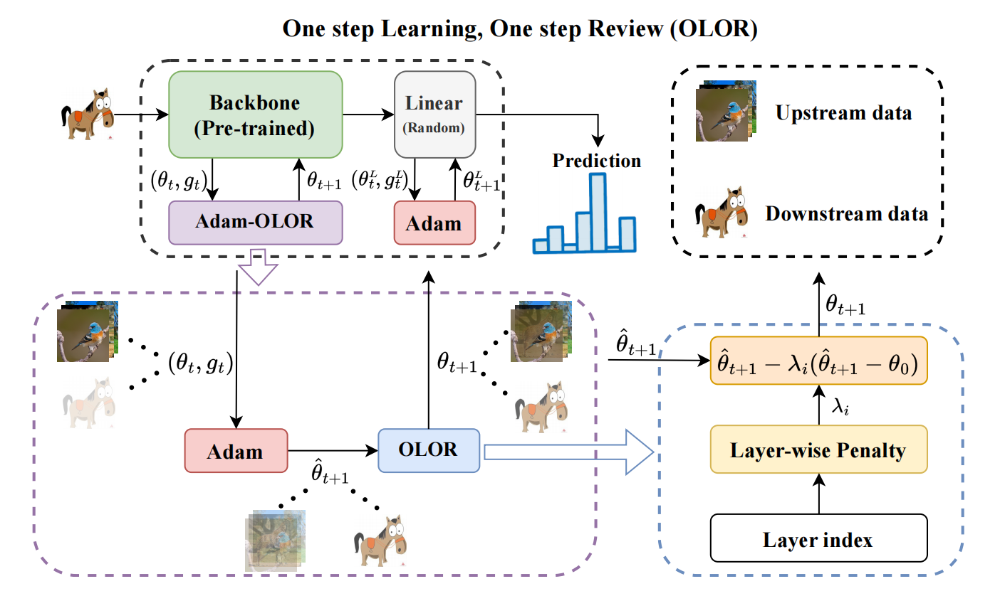
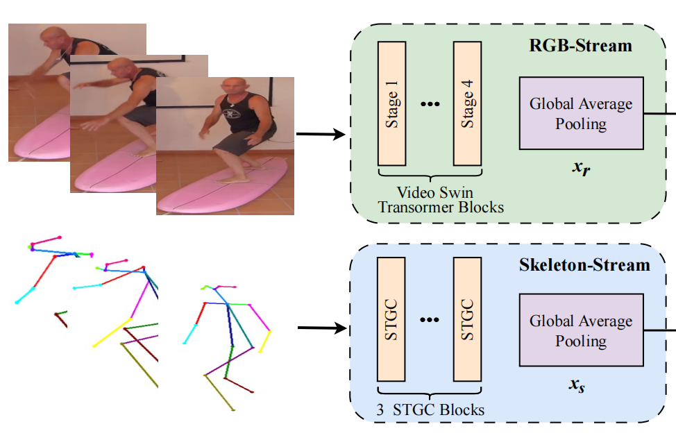
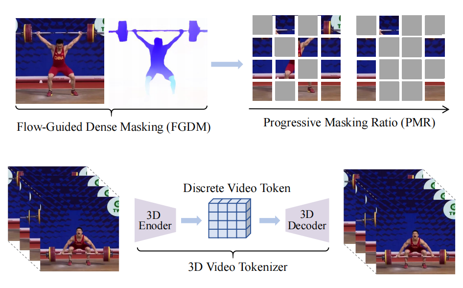

|
Xiaolong Huang Hey, I am Xiaolong Huang (黄晓龙), an MSc student (Jan. 2025 - now) at MILA and Concordia University. Currently I am working on learned optimization (LO) under the supervision of Prof. Eugene Belilovsky. I am also deeply interested in exploring and interpreting visual and multimodal representations, especially in how to create faithful and robust representations and effectively leverage them for downstream learning. Always open to research discussions and collaborations, feel free to reach out! |
Research |
|  |
Xiaolong Huang, Benjamin Therien, Eugene Belilovsky NeurIPS 2025 OPT Workshop paper |
|  |
Qiankun Li, Xiaolong Huang, Huabao Chen, Feng He, Qiupu Chen, Zengfu Wang ACMMM, 2024 paper / code |
|  |
Xiaolong Huang, Qiankun Li, Xueran Li, Xuesong Gao AAAI, 2024 paper / code |
|  |
Qiankun Li, Xiaolong Huang, Yuwen Luo, Xiaoyu Hu, Xinyu Sun, Zengfu Wang AMC-SME Workshop, ACMMM, 2023 (Best Student Paper Award) paper |
|  |
Qiankun Li, Xiaolong Huang, Zhifan Wan, Lanqing Hu, Shuzhe Wu, Jie Zhang, Shiguang Shan, Zengfu Wang ACMMM, 2023 paper |
 |
Xiaolong Huang, Qiankun Li ILR Workshop, ECCV, 2022 (Oral) paper / code / Competition Link |
|
Folked from Jon Barron's website. |